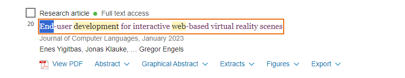
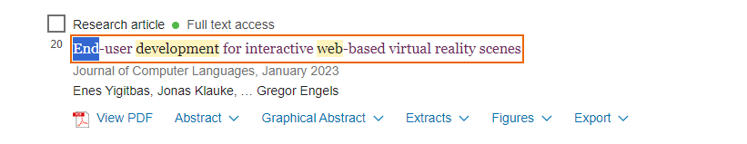
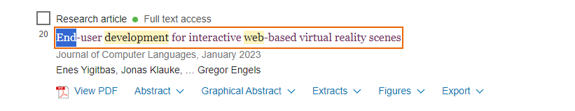

End-user development for web-based interactive virtual reality scenes. Artículo seleccionado
Aqui hacemos la seleccion de nuestro articulo
 

Aqui hacemos la seleccion de nuestro articulo

ChatPdf
Para poder entender de mejor
manera el archivo, se implemento la IA de ChatPdf.
Plantilla Startbootstrap:
Esta fue la plantilla utilizada para realizar la base de datos.
Artículo
Implementado:
Artículo seleccionado para la Base de datos.